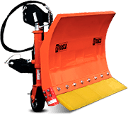
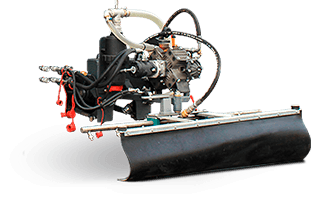

Передняя щетка199 000
Передняя щетка199 000
 Бункеровоз375 000
Бункеровоз375 000
 Косилки400 000
Косилки400 000
- Снежные плуги45 000

 Шнекоротор132 990
Шнекоротор132 990
- 

Преимущества самоходной машины MUVO
Специалисты Rasco воплотили в MUVO технические решения, обеспечивающие надежность работы, простоту в обслуживании и эффективное использование приводного агрегата. Высококачественные компоненты от проверенных поставщиков, собранные, установленные и подключенные с использованием знаний и опыта специалистов RASCO, делают MUVO коммунальной самоходной машиной, которая может выполнить все работы по коммунальному обслуживанию городских районов.
ПОПЕРЕЧНО РАСПОЛОЖЕННЫЙ ДВИГАТЕЛЬ
Двигатель самоходной машины MUVO расположен с правой стороны вдоль передней оси диагонально на шасси. Помимо обеспечения оптимального распределения нагрузки и низкого центра тяжести, такое расположение обеспечивает легкий доступ к ключевым узлам двигателя, что делает регулярное техническое обслуживание и ремонт быстрым и легким.ОПТИМАЛЬНАЯ КОНСТРУКЦИЯ ГИДРАВЛИЧЕСКОЙ СИСТЕМЫ
Гидравлическая система самоходной машины MUVO разработана таким образом, чтобы обеспечить необходимую мощность для приведения в действие большинства навесных приспособлений MUVO и оптимальный режим работы двигателя, благодаря чему экономится топливо и снижается количество выбросов. Это решение особенно заметно при использовании подметально-уборочного оборудования, когда достигается значение наибольшей эффективности расхода топлива двигателем во время использовании максимальной мощности всасывания подметально-уборочным оборудованием.РАСПОЛОЖЕННЫЙ ПО ЦЕНТРУ ВСАСЫВАЮЩИЙ ШЛАНГ
Всасывающий шланг, который соединяет переднее навесное оборудование с контейнером подметально-уборочного оборудования, расположен по центру относительно шасси самоходной машины, чтобы оптимизировать качество всасывания. Сочетание расположенного по центру всасывающего шланга и диагонально размещенного двигателя делает MUVO уникальной небольшой коммунальнойАВТОМАТИЧЕСКОЕ УПРАВЛЕНИЕ КЛЮЧЕВЫМИ СИСТЕМАМИ
Встроенная электронная система автоматически регулирует работу ключевых систем самоходной машины MUVO с целью повышения безопасности эксплуатации и продления срока службы. Система охлаждения автоматически регулирует температуру двигателя и масла, привод на все четыре колеса отключается на более высоких скоростях, также привод на все четыре колеса не может быть использован в транспортном режиме.ДВУХСТУПЕНЧАТАЯ МЕХАНИЧЕСКАЯ КОРОБКА ПЕРЕДАЧ
Наряду с возможностью использования рабочейи транспортной скоростей гидростатического привода MUVO имеет и двухскоростную механическую коробку передач. Сочетание гидростатического привода и механической коробки передач обеспечивает в общей сложности четыре скорости для движения вперед и две скорости для движения задним ходом. Такое решение позволяет не только использовать очень медленную скорость для работы со снежной фрезой, мульчером и косилкой, но и двигаться в гору при полной нагрузкеРАБОТА В ЗИМНИЙ ПЕРИОД
Выполняет задачи коммунального обслуживания в зимний периодВ зимний период MUVO является надежным помощником в очистке от снега и льда пешеходных и велосипедных дорожек, городских площадей и узких переулков. Сочетание снежного плуга BILO M, плуга с изменяемой геометрией VERTUS М или снежной фрезы с распределителем SOLID XM обеспечивает эффективное, безопасное и легкое удаление снега и льда с небольших городских территорий.
ПРОВОРНЫЙ САДОВНИК
Ухаживает за растительностью вдоль дорог, в парках, садах и виноградникахИспользуя переднюю косилку с горизонтальными ротационными ножами или переднюю манипуляторную косилку, вы превратите MUVO в прекрасного садовника. Контейнер подметально-уборочного оборудования SX2 может быть использован для всасывания кошенной травы с передней косилки, а благодаря манипуляторной косилке скашивание труднодоступной растительности вдоль дорог больше не проблема. Для приведения в порядок заросших участков MUVO может быть оборудован мульчером-измельчителем, а для ухода за цветами и растениями на клумбах— набором приспособлений для полива.
ГОРОДСКОЙ УБОРЩИК
Очищает дороги, парки и площадиПодметально-уборочное оборудование SX2 в сочетании с двумя или тремя щетками в течение весенних, летних и осенних месяцев превращает MUVO в высокоэффективного городского уборщика. Вместимости подметально-уборочного оборудования, составляющей почти 2 м3, достаточно для уборки остаточных камней после зимнего обслуживания, песка, листьев и мусора с городских улиц. Простое преобразование контейнера подметально-уборочного оборудования в резервуар для воды превращает MUVO из уборщика в мойщика городских пространств, тротуаров и подземных гаражей.
НЕЗАМЕНИМЫЙ ПОМОЩНИК
Всегда наготовеСбор мусора, высотные работы, перевозка грузов (мусора и убранной грязи), прочистка водостоков и все другие виды работ, которые вы только можете представить, — MUVO справится со всей работой. Оснащенный соответствующим оборудованием коммунальная машина MUVO всегда готова к выполнению любой задачи, которую вы можете перед ней поставить
Привод и управление разработаны с учетом широкого спектра применения
Благодаря компактным габаритам самоходная машина MUVO приспособлена для работы в узких и ограниченных пространствах, но также прекрасно чувствует себя на открытом пространстве.Неровности и склоны также не являются для нее проблемой благодаря конструкции привода и системы управления, адаптированной к любым условиям эксплуатации.
УПРАВЛЕНИЕ
Для управления самоходной машиной MUVO используется система сервопривода с цилиндрами на всех четырех колесах. Такая система управления делает возможным управление только передними колесами, управление всеми четырьмя колесами (4WS) и диагональное управление для облегчения доступа к углам. Система безопасности, которой оснащен центральный компьютер самоходной машины, делает невозможным использование режима работы, который при более высоких скоростях может привести к нестабильности самоходной машины.ПРИВОД НА ВСЕ ЧЕТЫРЕ КОЛЕСА
У MUVO в нормальных условиях эксплуатации привод на заднюю ось. Для езды по скользкой и сложной местности и для достижения максимального крутящего момент можно включить привод на все колеса (4WD).ГИДРОСТАТИЧЕСКИЙ ПРИВОД
Гидростатический привод обеспечивает быстрый отклик и позволяет поддерживать постоянную скорость при разной рабочей нагрузке и точно регулировать скорость движения. MUVO работает в двух режимах — транспортном и рабочем, которые можно изменять при наличии нагрузки и без остановки самоходной машины. Транспортный режим делает возможным быстрое перемещение между двумя местами работы, в то время как рабочий режим позволяет использовать устройства, которые требуют крайне низкой скорости и высокой мощности.ТОРМОЗНАЯ СИСТЕМА
Тормозная система с дисками на всех четырех колесах и двухступенчатым усилителем тормозов эффективно останавливает MUVO. Торможению способствует и гидростатический привод самоходной машины, а механический или электрический стояночный тормоз способен удерживать MUVO на месте и при полной нагрузке.РАЗМЕРЫ САМОХОДНОЙ МАШИНЫ
Небольшие размеры позволяют использовать MUVOв узких и ограниченных пространствах и в сочетании с современной системой управления обеспечивают минимальный радиус поворота MUVO, что обуславливает отличную маневренность.Позиция, с которой вы можете увидеть все
Предназначенная для использования 24 часа в сутки/ 7 дней в неделю, 365 дней в году, MUVO разрабатывалась как удобное передвижное рабочее место, где обеспечивается комфорт для водителя и легкость управления машиной и навесным оборудованием. Положение сиденья, большая поверхность стекол, кондиционер, обогрев передних стекол и сложные, но легкие в использовании технологические решения с размещенной по центру панелью управления делают возможным безопасное и комфортное многочасовое применение MUVO в самых тяжелых условиях эксплуатации.

ОБЗОР
Легкий доступ в кабину, панорамное ветровое стекло с подогревом, двери, полностью выполненные из стекла, а также боковые зеркала с подогревом обеспечивают хороший обзор и безопасность управления работой навесного оборудования впереди, над и под кабиной.БОРТОВОЙ КОМПЬЮТЕР
Информативный бортовой компьютер с цветным дисплеем, расположенный в центре кабины машины, отображает и контролирует все функции машины.Выбрав одно из четырех экранных меню, пользователь может получить всю информацию о характеристиках работы двигателя, гидростатического привода, гидравлической системы и состоянии всех важных узлов самоходной машины.СИСТЕМА ВЕНТИЛЯЦИИ
Встроенная система вентиляции обеспечивает оптимальный приток свежего воздуха и предотвращает запотевание стекол. Помимо системы отопления в комплектацию MUVO входит и климатическое оборудование для обеспечения максимального комфорта при использовании самоходной машины долгими и жаркими летними днямиСИДЕНЬЯ
Сиденья оснащены механической или пневматической подвеской, позволяющей эффективно гасить вибрации, передаваемые водителю и пассажиру от неровностей дороги и подвески самоходной машины. Оба сиденья оснащены интегрированными ремнями безопасности, обеспечивающими максимальную безопасность пользователей самоходной машиныНадежность и мощность в компактном корпусе
Несмотря на свои небольшие размеры, MUVO является мощной самоходной машиной с большой грузоподъемностью, разработанной для длительной эксплуатации при полной нагрузке. Выбор приводного агрегата, конструкция коммунального многофункционального шасси самоходной машины и гидравлической системы позволяют этой небольшой многофункциональной самоходной машиневыполнять широкий спектр работ.
ПРИВОДНОЙ АГРЕГАТ
Мощный турбодизельный двигатель, расположенный перпендикулярно шасси самоходной машины, является движущей силой для всех систем самоходной машины MUVO. С системой подавления вибраций и электронным контролем количества оборотов езда на самоходной машине MUVO и управление ей становятся комфортными и легкими. Приводной агрегат соответствует стандартам ЕURO, что обеспечивает высокий уровень безопасности для окружающей среды за счет минимизации выбросов вредных выхлопных газов.